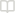

SOURCE PREVIEW
The Design of Everyday Things
Don Norman · Chapter 1 · p. 14 · ¶ 2
“Affordances define what actions are possible. Signifiers specify how people discover those possibilities.”
arivo://works/design/p14#paragraph-2
Inserts a linked reference, not a copy
design
esc
REFERENCE A WORK, NOTE, OR IDEA
DON NORMAN
THE DESIGN OF EVERYDAY THINGS
The Design of Everyday Things
Book · Don Norman
Saved passage · p. 14
Make the next action legible
Deep note · From this book
Making action visible
Knowledge base · 2 sources
↑ ↓ to move
↵ Insert reference
Text
@
IN THIS DAY
DEEP NOTE
Make the next action legible ↗
The Design of Everyday Things p. 14 · Created today
A reference keeps its source. Return to the passage, the note, or the day it became useful.
Illustrative journal writing

October 2026

Saved at 12:07

@prathamarchives
/
Journal

Search anything
⌘ K